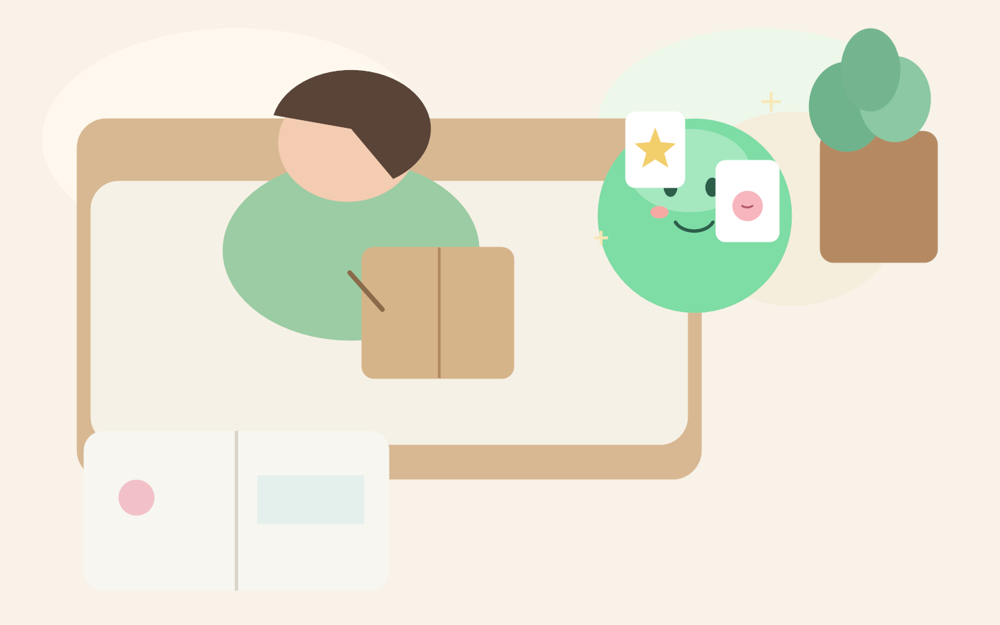

이런 분에게 맞아요
- 일기 쓰기를 여러 번 시작했다가 멈춘 분
- 감정 정리와 일정 관리를 한 번에 하고 싶은 분
- 이번 주의 흐름을 빠르게 회고하고 싶은 분
YOUR DAILY REFLECTION CO-PILOT
NightLog는 하루를 대화로 정리하고 감정 흐름을 읽어, 내일 바로 실행할 일정까지 이어주는 AI 저널입니다. 기록이 끊기는 대신, 작은 실행이 쌓이게 만듭니다.

01
Start / Turn / End 구조로 짧게 기록하고, 핸즈프리 음성 모드로도 자연스럽게 이어갑니다.
02
요약, 감정 태그, 추천 액션을 한 화면에서 확인하고 바로 편집해 일정으로 저장할 수 있습니다.
03
월력/주간 그래프로 기록량과 감정 변화 흐름을 시각화해 회고를 습관으로 만듭니다.

오늘 기록과 이어서 녹음하기 버튼이 결합된 메인 저널 카드

긴 기록을 읽기 쉽게 유지하는 본문 중심 레이아웃

감정 강도와 기분 상태를 빠르게 설정하는 오버레이

녹음 상태, 시간, 저장/취소를 명확히 분리한 바텀 시트

마이크 중심 시작점과 직접 작성 동선을 동시에 제공

연간 기록량, 작성일, 총 시간 지표를 한 번에 확인

월간 활동일과 감정 변화를 회고하는 트렌드 화면

진입 문구, 입력, 계정 생성 링크를 단순하게 정리한 인증 화면

필수/선택 동의를 분리해 첫 진입에서 의사결정을 명확화
파일 경로는 `homepage/media/screens/01~09-*.png`로 맞춰뒀습니다. 새 스크린샷 파일을 같은 이름으로 교체하면 즉시 반영됩니다.
약관 동의 → 로그인/회원가입 → 관심사 선택
홈에서 대화 시작, 감정 체크인, 음성/텍스트 기록
요약/감정/추천 일정 확인 후 시간 조정 및 저장
캘린더 인사이트에서 흐름을 보고 다음 기록 품질을 개선
현재 MVP는 사용자 기기 로컬 저장 기반이며 서버 전송은 하지 않습니다.
가능합니다. 음성 인식이 어려운 환경에서는 텍스트 입력으로 동일한 흐름을 사용할 수 있습니다.
결과 화면 진입 후 일정 1개 이상 저장하는 주간 실행 전환 사용자 수입니다.
서비스 소개, 협업, 도입 문의를 남겨주세요. 메일로 바로 전송되며, 웹훅 주소를 설정하면 Notion/Slack 등으로도 연동할 수 있습니다.